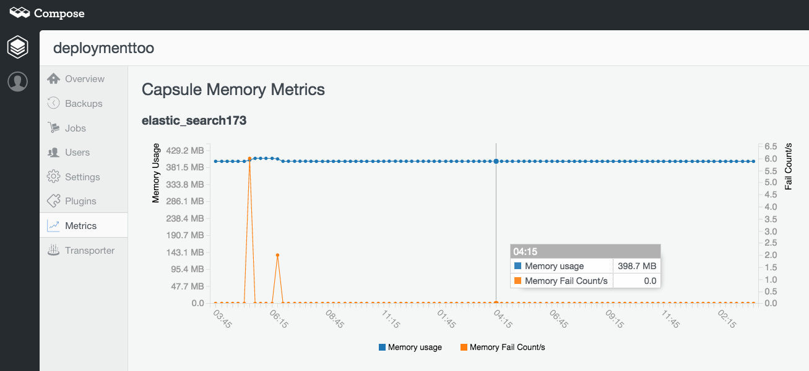
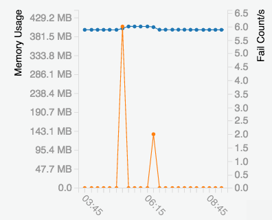

Elasticsearch metrics
Measuring is important – you need insight on how your Elasticsearch database is performing. With that in mind, we’ve added new metrics charts to Compose’s Elasticsearch dashboard. These new charts show memory consumpution and how regularly the Elasticsearch node finds itself looking for more memory that isn’t available.
The scale on the left hand side and the blue “memory usage” line shows the total memory consumption on the capsule – a capsule is the container that is holding the running node. That includes all memory usage in the capsule, not just the heap space used by the Java based Elasticsearch but also memory mapped files and other resources.
The scale on the right hand side and the orange line shows how often the node is looking for more memory using a metric called the “Memory fail count per second”. This count doesn’t mean memory has actually failed, it just means memory has not been given to the process requesting it because the capsule it is running in has hit its hard limit for memory use. It’s this graph which provides the most useful information about the state of the node.
If the line is spiking or rising it means that your database is asking for more memory and not getting it. Take the graph above and let’s look at the start of it. You’ll notice it spiking early on. It’s at this point you may need to check your current workload. If you are running a transient, heavy load such as a large import which requires much indexing, then this situation should pass when the work is complete and isn’t something to worry about. If, on the other hand, you aren’t placing a particular load on your system, you should be concerned – you may need more RAM on your nodes for your workload and should drop a mail to support@compose.io.
A more normal state of affairs, and more typical to see in the metrics will be a steady memory allocation and a low to zero rate of memory fail counts. This indicates that the memory is being consistently used by the underlying Java platform and it is being returned to availability so that steady rate is maintained. With a virtual machine such as Java, you want to be sure it makes best use of all memory while not spiralling into a state where its spending more time managing memory than running.
A previous version of this article referred to an absolute memory fail count which we decided to change to an easier-to-read rate of change display after initial user feedback.